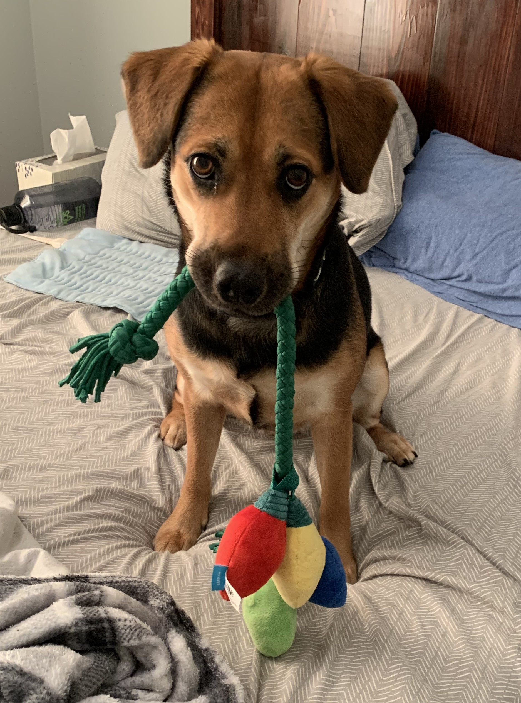

About Me
About Me
Spoiler alert! Scroll down to see a cute picture of my dog!
Introduction
Welcome! My name is Richard, and I am currently serving in the United States Marine Corps as a Ground Supply Officer. I will be separating from the service in May 2024 and am looking for positions as a data analyst.
Professional Experience
 My journey began at the United States Air Force Academy, where I graduated with a B.S. in Military Strategic Studies. Instead of
pursuing a traditional career route in the Air Force, I opted to cross-commission into the Marine Corps, where I was selected
to be a Ground Supply Officer. During my 4+ years of service, I have completed two deployments and served in a wide variety of positions
ranging from being a financial analyst, managing a customer service department, acting as a contracting specialist, and serving
as the assistant manager for a company with over 200 personnel. All of these were in addition to my primary military specialty as a
supply chain operations manager!
My journey began at the United States Air Force Academy, where I graduated with a B.S. in Military Strategic Studies. Instead of
pursuing a traditional career route in the Air Force, I opted to cross-commission into the Marine Corps, where I was selected
to be a Ground Supply Officer. During my 4+ years of service, I have completed two deployments and served in a wide variety of positions
ranging from being a financial analyst, managing a customer service department, acting as a contracting specialist, and serving
as the assistant manager for a company with over 200 personnel. All of these were in addition to my primary military specialty as a
supply chain operations manager!
When deciding what I wanted to do when I get out of the Marine Corps, I reflected on what parts of each job I felt most passionate about. What I realized was that although I never worked in a "traditional" data analyst role, I have applied the tools and mindset of a data analyst to every position that I have had over the years. Whether building dashboards or creating reports, I found that tackling problems using a data-driven approach allowed me to deliver new insights to senior leaders and adjacent departments and to automate processes to increase my own productivity along with the productivity of the teams I have worked with.
My experiences allowed me to develop strong proficiency using programs such as Microsoft Excel, Power BI, and SharePoint. Though not an expert, between college and my career I have also had the opportunity to become familiar with other programs to include Microsoft Access, MATLAB, and VBScript. Since deciding I want to become a data analyst, I have spent the past year expanding my skillset by teaching myself R and SQL, and I plan to study Python before I get out of the military as well.
Personal Life

When not at work, I can most likely be found spending time in nature with my wife and dog. I also enjoy cooking, gardening, woodworking, and
reading. I consider myself to be a lifelong learner and avid DIYer. My major project right now is renovating a historic home my wife and I
inherited in Jackson, GA.